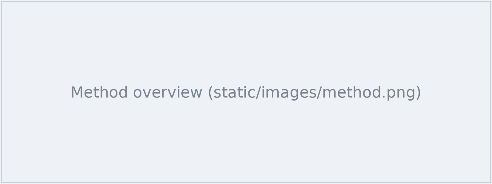
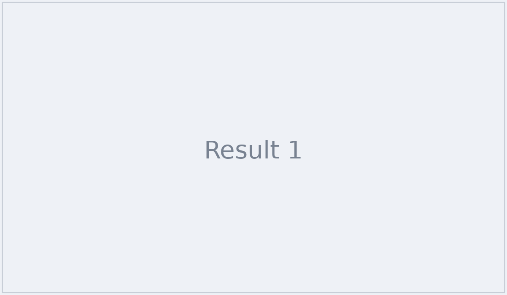

__TITLE__
Abstract
Problem. What is hard today and why existing approaches fall short. Idea. The key insight in one or two sentences. Approach. How it would be implemented. Expected outcome. What it would enable and how to tell it worked.
Method

Describe the pipeline. Inline math works like $x_t \in \mathbb{R}^d$, and display math like:
$$\mathcal{L}(\theta) = \mathbb{E}_{(x,y)\sim\mathcal{D}}\big[\,\ell(f_\theta(x), y)\,\big] + \lambda \lVert \theta \rVert_2^2$$- Step one. ...
- Step two. ...
Results

| Method | Success ↑ | Time (s) ↓ |
|---|---|---|
| Baseline | 0.00 | 0.0 |
| Ours | 0.00 | 0.0 |
Discussion & Next Steps
- Open question ...
- Planned experiment ...
BibTeX
@misc{shang__BIBYEAR_____REPO__,
title = {__TITLE__},
author = {Shang, Wentao},
year = {__BIBYEAR__},
url = {https://sagshang.github.io/__REPO__/}
}